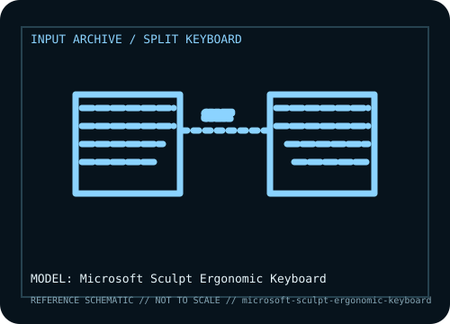

[ KEYBOARDS AND INTEGRATED POINTING DEVICES // IDENTIFIED COMPONENT ]
Microsoft Sculpt Ergonomic Keyboard
Split, domed ergonomic desktop keyboard with a cushioned palm rest, separate numeric keypad, and dedicated 2.4 GHz USB transceiver.

MODEL IDENTIFICATION: Microsoft Sculpt Ergonomic Keyboard (keyboard / number-pad set; model and bundle identifier vary by region). Verify the bottom label, regional SKU, receiver, and revision against the sources before repair or compatibility claims.
Model specifications
| Catalog subcategory | Keyboards and integrated pointing devices |
|---|---|
| Form factor / layout | Curved, split key field with a domed center and separate numeric keypad, allowing the keypad to be positioned independently. Layout is designed for Windows; legends vary by locale. |
| Key mechanism / controls | Membrane-style low-profile key mechanism with sculpted keycaps and ergonomic key wells. It is not a mechanical keyboard and has no adjustable mechanical actuation. |
| Wired protocol | No wired typing mode. Host connection is through the supplied USB nano transceiver; the detached numeric keypad is part of the Sculpt Ergonomic Keyboard set. |
| Wireless protocol | Microsoft 2.4 GHz proprietary radio link to its USB transceiver; not Bluetooth. Battery configuration and supported device bundle should be checked from the underside/packaging. |
| Host compatibility | Official target is Windows with an available USB-A port. Basic keyboard input may enumerate as a generic USB keyboard on other hosts, but function-key behavior and Microsoft software customization are not assured. It cannot pair directly to a Bluetooth-only host. |
| Configuration / software | Basic typing uses the receiver and operating-system keyboard stack. Microsoft Mouse and Keyboard Center support varies with OS version and product status; preserve the receiver as a matched component. |
| Revision / service caveat | Do not confuse this standalone keyboard set with Sculpt Ergonomic Desktop bundles that add a mouse, or with the later Sculpt Comfort keyboard. The receiver is required and is not interchangeable by appearance alone. |
Preservation and service notes
Record the unit label, keyboard layout, switch option, cable or matched receiver, host OS, and test mode before troubleshooting. For wireless models, distinguish Bluetooth pairing from proprietary receiver operation; for wired models, verify that the USB connection carries data rather than power only.
Keep saved layouts and firmware with the exact model/revision. Disconnect power before switch or keycap service, use manufacturer-safe cleaning methods, and do not infer a unit’s configuration from a broad product-family name.
Manufacturer and independent references
- Microsoft — Sculpt Ergonomic Keyboard product recordPrimary manufacturer product reference for identifying this model and its stated feature set.
- RTINGS — Microsoft Sculpt Ergonomic Keyboard reviewAdditional manufacturer documentation or independent model-specific testing; consult the revision/region applicable to the physical unit.
Product pages and support resources can change. Preserve the applicable manual or page revision when documenting a particular keyboard.